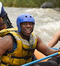

About Our Rafting Adventures:

At Rokel Community Rafting, located right off the Waterloo Highway in Sierra Leone, we bring locals and visitors together for unforgettable river adventures. Our certified local guides lead safe, thrilling whitewater trips along the scenic Rokel River, combining excitement with the warm hospitality and natural beauty of our community.